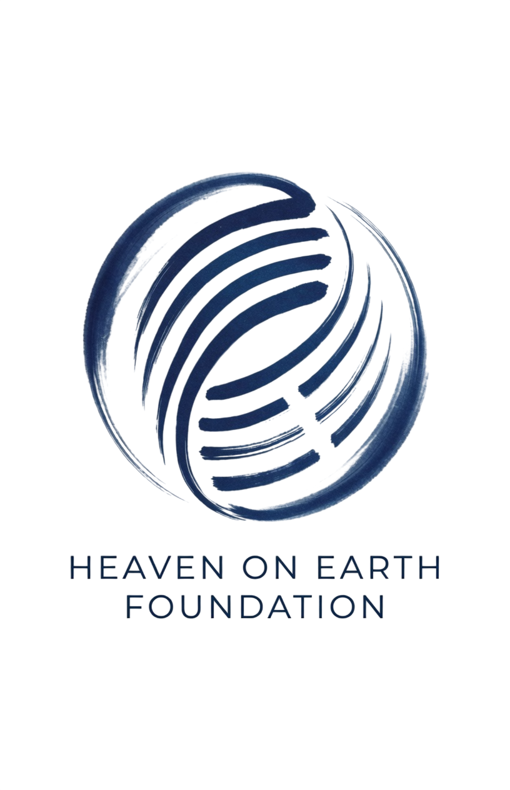
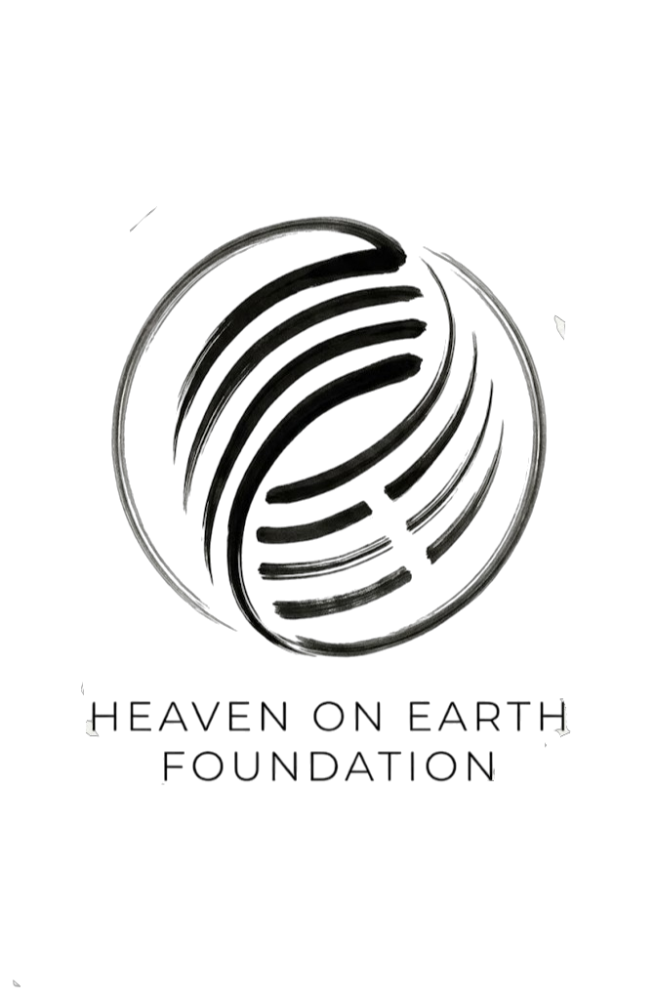

Institutional Prospectus
Strategic Operations & Global Blueprint · v1.1

Strategic Operations & Global Blueprint · v1.1
September 2025 · Strictly Confidential
Break-even at 35% occupancy vs. 60-70% industry standard — a 40-point safety margin through vertical integration
Sliding scale access — Community Rate, Standard, and Pay It Forward tiers. No application required.
Four-pillar vertical integration — capturing margins outsourced models lose
Fiduciary Board + U.S. Resident Trustee — covenant-protected, escrow-governed
Full documentation available in Virtual Data Room upon NDA execution
What it is: A $6-9M senior impact debt opportunity financing institutional-grade wellness infrastructure. 4-6% non-compounding return with 100% principal protection. Asset-backed, covenant-governed, and mission-aligned.
Why it matters: We break even at 35% occupancy while competitors need 75% — a 40-point safety margin. Vertical integration: farm eliminates food costs, Work-Study saves $200K annually, four-pillar ecosystem captures margins.
Why lenders care: 1.40x DSCR at 35% occupancy. $1.2M reserve in escrow with joint CFO/lender signing. Independent Board majority with veto power. South Dakota Trust + Wyoming LLC = bankruptcy remoteness.
The terms: 4-6% non-compounding. 100% principal return at maturity. Zero equity dilution. Two-tranche disbursement with milestone gates. Interest-only for 12 months, then amortizing quarterly.
Heaven on Earth Foundation is a nonprofit operating company built on asset-backed wellness infrastructure. All operational surplus flows through a legally codified Mission Sustainability Waterfall — first to reserves, then to debt service, then back into the Foundation to improve programs, infrastructure, career opportunities, and access for those who cannot contribute at the standard rate. No surplus is extracted. No founder holds equity. Every dollar cycles back into the mission.
Investment Thesis: A $6–9M senior impact debt opportunity in institutional-grade wellness infrastructure. This is not speculative equity — it's asset-backed lending with 4–6% non-compounding returns and 100% principal protection. The 1.40x DSCR at 35% break-even occupancy provides a 40-point safety margin over the 60–70% industry standard.
Investment Highlights: Senior Impact Debt structure means you're first in line for repayment. $6–9M target raise. 4–6% non-compounding return (simple interest, no compounding). 100% principal protection through asset backing and covenant structure.
Use of Funds: BC Flagship — acquisition and renovation of existing institutional hospitality asset (not ground-up construction). Infrastructure — 40-bed wellness center build-out. Vertical Integration — regenerative farm establishment. Debt Service Reserve — $1.2M lender-controlled escrow ensures 6 months of debt service coverage from day one.
Key Metrics Explained: 1.40x DSCR Coverage at 35% occupancy means even at low utilization, there's 40% more cash flow than needed to service debt. 35% Break-Even Floor vs. 60–70% industry standard — most retreat centers need 60–70% occupancy to break even; this model works at 35%. ~$200K Annual Labor Savings through Work-Study program where participants contribute labor in exchange for program access.
Risk/Reward Profile: The 40-Point Safety Margin visual compares Heaven on Earth's 35% break-even to the industry's 60–70% standard. This margin comes from vertical integration — capturing food costs, labor value, and operational margins that outsourced models lose to third parties.
Strategic Pillars: Mission — sliding scale access model where those who can pay more support access for those who can't. Model — Four-pillar vertical integration (Farm, School, Enlightenment Center, Healing Center) keeps revenue in-house rather than outsourcing. Governance — Fiduciary Board with U.S. Resident Trustee provides covenant protection and escrow governance.
Impact Metrics: Sliding Scale Access — Community Rate, Standard, and Pay It Forward tiers. No application required. Same facilities for everyone. 40% Local Food Sourcing — regenerative farm reduces supply chain costs and food expenses. 100% Non-Profit Structure — all surplus reinvested in mission, not shareholders.
Lender Protections: $1.2M Debt Service Reserve in escrow. Negative Pledge Covenant prevents additional debt without consent. Springing Board Veto activates if covenants are breached. Ringfenced Charitable Assets in South Dakota Dynasty Trust provide bankruptcy remoteness.
Financial Terms (Layman's Guide)
Senior Debt: You get paid first if anything goes wrong — before equity holders, before anyone else. It's the safest position in the capital structure.
DSCR (Debt Service Coverage Ratio): How much cash flow is available to pay debt. 1.40x means for every $1 of debt payment, there's $1.40 coming in. Anything above 1.0x is good; 1.40x is very safe.
Non-Compounding Interest: Simple interest — you earn 4-6% on the original amount, not on accumulated interest. No "interest on interest."
Break-Even Occupancy: The minimum guests needed to cover costs. 35% means you only need 35 out of 100 beds filled to break even. Most competitors need 60-70%.
Vertical Integration: Owning all parts of the supply chain instead of outsourcing. We grow our own food, run our own programs, keep our own margins.
Debt Service Reserve: A savings account with 6 months of debt payments set aside in advance. Guarantees lenders get paid even if revenue dips temporarily.
Negative Pledge Covenant: A legal promise not to take on more debt without lender approval. Protects your position from being diluted by new loans.
Bankruptcy Remoteness: Legal structure that makes it nearly impossible for creditors to seize assets. South Dakota Dynasty Trust is one of the strongest asset protection structures available.
The investment thesis addresses a structural market gap: measurable demand for wellness infrastructure significantly exceeds supply of durable, institution-grade delivery models. Industry fragmentation and founder-dependent operations create persistent operational volatility.
The Foundation leverages a diversified earned revenue model strategy where partnership funding and grant support enable sliding scale access for underserved communities. This mission-aligned pricing model, proven by Esalen Institute and Kripalu Center, ensures accessibility without donor dependency.
The Foundation's architecture prioritizes governance rigor, asset-backed capital structure, and codified operating controls. This institutional approach ensures operational continuity independent of any individual's continued involvement.
A closed-loop ecosystem designed to restore the whole organism—body, mind, and spirit.
A fully integrated regenerative ecosystem serving as the nutritional foundation, cost-offset engine, and living classroom. The farm generates both internal savings (eliminating food cost markups) and external revenue (CSA memberships, value-added retail).
Biointensive & Regenerative Cultivation:
Gift Economy Farm Model — Six Integrated Revenue Streams:
Year-Round Production — Climate-Controlled Greenhouse:
BC's coastal climate limits outdoor cultivation November–March. The integrated greenhouse system ensures 365-day food production regardless of exterior conditions.
Hybrid Growing Systems:
Financial & Educational Impact:
Performance Metrics: Soil organic carbon (SOC), microbiome diversity, water retention, cost-per-meal vs. external sourcing, farm revenue per acre.
What it is: A regenerative farm operating on gift economy principles with six income streams: (1) CSA farm shares on sliding scale with partnership funding for low-income access, (2) Artisanal products made with care for community nourishment, (3) Community kitchen meals offered at accessible rates—no one turned away, (4) Educational farm tours and workshops by donation or sliding scale, (5) Corporate CSA contracts that subsidize community programs, and (6) Work-Trade participants exchanging labor for food and learning. Why it matters: $300K annual food cost savings PLUS revenue that sustains operations without gouging—farm operates on radical hospitality, not profit maximization. Why lenders care: Multiple revenue streams from one asset; diversified income reduces risk; mission-aligned pricing builds community trust and long-term sustainability. Key concepts: Gift economy, CSA, sliding scale access, agritourism, Work-Trade, radical hospitality.
Agricultural Terms (Layman's Guide)
Technical Infrastructure Analysis
Detailed multi-campus farm infrastructure analysis — including per-site CAPEX breakdowns for all 4 confirmed jurisdictions (BC, Thailand, Bali, Portugal), solar energy modeling, and aquaponics system specifications — available in Virtual Data Room upon NDA execution. Network-wide farm infrastructure investment: ~USD $2.8M net of EU grants. Vietnam and Hawaii remain under evaluation as expansion candidates.
The Body: A practical curriculum designed to restore biological Original Design and build immense cellular resilience. This department creates a stable physiological foundation for advanced contemplative work.
Core Curriculum:
Integration & Tracking: This pillar operates in close integration with the Heaven on Earth Farm (providing the actual food) and the Healing Center (for clinical oversight). Outcomes are tracked through HRV measurements and participant self-reports.
Outcomes: Metabolic flexibility, reduced inflammation, improved mitochondrial function, trauma release, enhanced vagal tone, somatic resilience.
What it is: A body-regulation program that prepares people physically for deep contemplative work. Three main components: (1) Nutritional Reset—fasting protocols and ancestral eating to fix metabolic issues, (2) Cellular Conditioning—sauna/cold plunge and red light therapy to boost mitochondria and reduce inflammation, (3) Somatic Regulation—movement and breathwork to release stored trauma and regulate the nervous system. Why it matters: You can't do deep spiritual work if your body is inflamed and traumatized. This pillar creates the physical foundation. Why lenders care: Integrates with Farm (food supply) and Healing Center (clinical oversight); creates measurable biometric outcomes. Key concepts: Biological Original Design, metabolic reset, cellular conditioning, somatic regulation.
Health & Wellness Terms (Layman's Guide)
Metabolic Reset: Giving your digestion a break through fasting or simple eating to let your body heal and reset its energy systems.
Cellular Conditioning: Using heat (sauna), cold (cold plunge), and light (red light therapy) to make your cells stronger and more resilient.
Somatic Regulation: Using movement and breathing to release trauma stored in the body and calm your nervous system.
HRV (Heart Rate Variability): A measure of how well your nervous system handles stress. Higher HRV = better stress resilience and recovery.
Mitochondrial Function: How well your cells produce energy. Better mitochondrial function = more energy, less fatigue, better health.
Inflammation: Your body's immune response. Chronic inflammation causes many health problems. Reducing it improves overall wellness.
Vagal Tone: How well your vagus nerve (which controls relaxation and digestion) is working. Good vagal tone = better stress response and digestion.
Ancestral Eating: Eating foods humans evolved to eat—whole foods, no processed ingredients, similar to what our ancestors ate.
The contemplative core facilitating the direct experience of truth and radical self-realization. This pillar operationalizes Enlightenment Intensives using the Communication Dyad, with Sliding Scale Access funding democratic access.
The Core Practice:
Sliding Scale Access Model:
Access Model Benchmark (Esalen/Kripalu Model): Non-profit retreat centers utilize institutional partnerships and grant funding to offer scholarships covering 50% to 90% of tuition and accommodations for individuals demonstrating financial need.
"Discovering who you are dissolves a huge segment of life's uncertainty and pain and awakens you to the living reality of truth."— Charles Berner
The 2,000-Hour Mastery Path — Eliminating Guru Risk:
The Enlightenment Intensive Mastery Standard
The Enlightenment Intensive represents the apex of our vocational excellence framework—a 2,000-hour immersive path ensuring facilitators can deliver the luxury service levels required to command premium price points while maintaining the integrity of the dyad method.
Retention & Compensation:
Outcomes: Standardized pre/post measures, anonymous NPS, breakthrough documentation, 2,000-hour mastery pipeline, key-person risk elimination.
What it is: The contemplative core offering Enlightenment Intensives using the Communication Dyad, with tiered pricing ($420-$775 standard / $1,500-$7,225+ Pay It Forward) that funds sliding scale access. PLUS a 2,000-hour mastery pipeline that trains facilitators in 4 progressive tiers—eliminating "guru risk" by ensuring the method can be delivered by certified masters, not just founders. Why it matters: Every luxury participant subsidizes community access; 2,000-hour pipeline ensures quality and scalability beyond founder involvement. Why lenders care: Premium pricing generates mission surplus; standardized training pipeline proves scalability (franchise model vs. personality-dependent retreat); 2,000-hour certification ensures consistent delivery quality across all locations. Key concepts: 1-for-1 scholarship, sliding scale access, dyad method, 2,000-hour mastery path, guru-risk elimination, standardized facilitator pipeline.
Contemplative Terms (Layman's Guide)
Communication Dyad: A structured communication exercise where two people take turns listening and speaking without interruption. Creates deep connection and self-discovery.
Enlightenment Intensive: A multi-day immersive retreat focused on self-discovery through the dyad method. Participants explore who they are beyond their social conditioning.
Guru Risk: The danger of a business or community depending too much on one charismatic leader. If that leader leaves, the whole thing collapses.
2,000-Hour Mastery Path: A training program requiring 2,000 hours of practice to become a master facilitator. Similar to how pilots or surgeons need extensive training before practicing independently.
Phantom Equity: Profit-sharing rights without actual ownership. Staff earn a share of profits without holding legal shares in the company.
Facilitator Pipeline: A system that trains new facilitators continuously, ensuring there are always qualified people to deliver the programs.
Standardized Delivery: Ensuring every facilitator delivers the program the same way, so participants get consistent quality regardless of who leads.
A comprehensive healing arts and somatic wellness space providing clinical integration through thermal contrast therapy and somatic regulation. This pillar generates B2B stability through corporate contracts and outpatient memberships.
Core Services:
B2B Corporate Wellness Retainers:
Outpatient Memberships:
Outcomes: Metabolic markers (ketones, glucose), HRV, inflammatory profiles, lifestyle integration tracking.
What it is: Clinical integration pillar with B2B stability—corporate retainers ($500-$3,000/mo) and outpatient memberships ($150-$250/mo). Why it matters: 12-month contracts eliminate seasonal volatility; predictable cash flow enables multi-year scholarship commitments. Why lenders care: Recurring revenue reduces occupancy risk; corporate wellness market growing 47% post-COVID. Key concepts: B2B retainers, outpatient memberships, revenue predictability, seasonal smoothing.
Business & Clinical Terms (Layman's Guide)
B2B Retainers: Business-to-business contracts where companies pay a monthly fee for ongoing services. Like a subscription but for corporate clients.
Outpatient Memberships: Monthly memberships for local residents to use facilities without staying overnight. Like a gym membership but for wellness services.
Seasonal Volatility: Revenue fluctuations based on seasons. For example, retreat centers are busy in summer, empty in winter. Recurring contracts smooth this out.
Revenue Predictability: Knowing how much money will come in each month. Makes financial planning and loan repayment much safer.
Corporate Wellness: Programs companies offer employees to improve health and reduce stress. A growing market as companies invest in employee wellbeing.
Thermal Suite: Facilities like saunas, steam rooms, and cold plunges used for health benefits. High-margin service with recurring revenue potential.
Cash Runway: How long the business can operate with current cash reserves. Predictable revenue extends runway and reduces risk.
Vertical integration addresses structural margin leakage endemic to outsourced retreat models. Industry data indicates material failure rates where operational dependencies on third-party vendors create cost volatility and quality inconsistency.
The closed-loop ecosystem captures value at multiple operational layers: on-site regenerative agriculture eliminates food cost markups while generating educational programming revenue; integrated body preparation and contemplative protocols produce measurable guest outcomes with documented retention rates; the absence of outside vendor dependencies produces unit economics distinct from industry benchmarks.
Four operational pillars function as an integrated value chain: the Farm produces food and educational experiences; the School of Living regulates stress biology through evidence-based protocols; the School of Enlightenment delivers certified dyad facilitation and Enlightenment Intensive trainings; the Healing Center provides medical fasting for metabolic reset. Each component reinforces the others, creating network effects within the operational model.
Scalability derives from replicable architecture rather than vendor aggregation. Each international deployment utilizes jurisdiction-specific tax incentives and capital subsidies while maintaining identical operational standards. Thailand offers 0% corporate tax for 8 years under BOI promotion; Portugal provides EU structural funds covering 50% of capital expenditure.
The economic result: vertical integration captures margin that outsourced models cede to vendors. This is not marketing positioning; it is arithmetic derived from cost structure differential.
Our inaugural sanctuary in British Columbia, Canada.
Targeted for the pristine Sunshine Coast (Roberts Creek), the inaugural flagship leverages the region's old-growth forests and coastal tranquility. This specific geography was selected because its natural environment actively supports deep nervous system regulation and contemplative healing.
Market Validation — Proven Demand:
Competitive Gap — No Institutional-Grade Competitor:
Provincial Comparables — Scale is Viable in BC:
Property Availability — Active Listings:
What it is: Sunshine Coast (Roberts Creek) selected for the flagship location. Why it matters: Existing operators (Linwood House, RVN Wellness, Discovery Place) prove 20+ years of market demand in this exact location—but all are tiny B&Bs (6-15 guests max). No one is doing institutional-scale professional wellness. Why lenders care: Market validation exists (proven demand) BUT no institutional competitor (first-mover advantage). Provincial comparables (Naramata Centre 23 acres, RockRidge Canyon 350 capacity) prove large-scale models work in BC. Multiple properties currently available for acquisition. Key concepts: Market validation, competitive gap analysis, first-mover advantage, ALR land availability, provincial comparables.
To ensure absolute capital efficiency, Phase 1 bypasses the heavy CapEx risk of ground-up construction by utilizing an asset-light management agreement on an existing 40+ bed facility. This provides immediate, Day-1 operational capability for residential lodging, dyad contemplation halls, and somatic integration spaces, deferring permanent land acquisition until the model is post-revenue.
What it is: An asset-light launch model using an existing hospitality-capable facility under management agreement. Why it matters: This sequencing can reduce early CapEx exposure and shorten time-to-revenue. Why lenders care: Lower construction dependency can reduce timeline and permitting uncertainty in Phase 1. Key concepts: Asset-light launch, CapEx deferral, speed-to-cashflow.
Operating under British Columbia's favorable regulatory environment for integrative wellness and non-profit religious/spiritual organizations, with established BC Society governance structure and a Canadian tax-exempt status pathway.
Zoning & ALR Compliance Strategy:
What it is: A BC Society legal pathway for mission operations with phased compliance progression. Why it matters: Clear jurisdictional structure supports governance discipline and operating legitimacy. Why lenders care: Predictable legal framework and compliance sequencing improve risk visibility for early deployment. Key concepts: BC Society framework, compliance pathway, jurisdictional clarity.
The BC Flagship serves as the foundational "Proof of Concept," engineered to organically cash-flow subsequent international expansion:
Strategic Note: The following locations have been identified through comprehensive market analysis as optimal candidates for Phase 3+ expansion (Years 6–10). Each aligns with the Foundation's framework: regenerative agriculture potential, established wellness tourism demand, favorable regulatory environment, and mission-aligned positioning.
Market Data: $3.6B tourism by 2027 · 10% annual wellness growth · 1,300+ monthly "wellness retreat" searches · Avg. stay: 14 days (3rd globally) · Avg. spend: $1,600/visitor
Framework Fit: Official "Blue Zone" (longevity) · Carbon-neutral mandate · Ideal for permaculture · Established luxury presence (Six Senses, One & Only)
Investment Climate: CINDE actively promotes wellness · Stable democracy · Tourism investment incentives
Priority: Same benefits as Thailand, closer to US donors
Market Data: "Land of Enchantment" brand recognition · 1,000+ years Pueblo spiritual heritage · High-desert wellness established (Synergia Ranch, Mountain Cloud Zen)
Framework Fit: Indigenous spiritual lineage · Proven regenerative agriculture (water harvesting) · Accessible to major Southwest population centers
Investment Climate: Film/tourism incentives available · Lower land costs than California · Established art/wellness crossover market
Priority: HIGH — Domestic credibility for US institutional donors
Market Data: 2M+ annual visitors to region · ROI: 8–15% (highest in Mexico) · Tulum Intl Airport (2023) + Mayan Train improving access
Framework Fit: SHA Mexico established luxury precedent · Yucatan/Central MX ideal for agroforestry · Proximity to US B2B corporate retreat market
Investment Climate: Tourism Law incentives · Lower regulatory burden than USA · Strong pre-construction opportunities
Priority: HIGH — North American expansion hub, easier than direct US entry
Market Data: 380+ weekly US flights (68,000 seats) · New routes: Houston-Medellín, Chicago-Bogotá · Tourism growing 15%+ annually
Framework Fit: Caribbean coast + Andean mountains · UNESCO Coffee Region for farm integration · Biodiversity hotspot
Investment Climate: Post-conflict emerging market · Land costs 40–60% below Costa Rica · Government actively promoting nature tourism
Priority: MEDIUM-HIGH — Emerging market play, enter before prices rise
Market Data: Dollarized economy (no currency risk) · Pensionado visa attracts wellness retirees · Strongest Central American economy
Framework Fit: Comparable climate/terrain to Costa Rica · Coffee region established · "Blue Zones" research interest growing
Investment Climate: Investment Stability Law protects foreigners · Tourism incentives via SEM law · Land costs 30% below Costa Rica
Priority: MEDIUM — Costa Rica backup option if land prices rise
Market Data: 16,000km coastline · 6,000 islands · €3B+ wellness tourism sector · "Rising star" status (vs. saturated Mykonos/Santorini)
Framework Fit: Ancient wellness heritage (holistic health birthplace) · Mediterranean diet regenerative agriculture · EU agritourism funding
Investment Climate: Property prices recovering from crisis (opportunity) · EU structural funds available · 50%+ CapEx subsidies via TER grants
Priority: MEDIUM — European diversification, year-round operation
Market Data: OECD member (strongest SA economy) · German/Swiss heritage creates wellness culture · Adventure tourism growing
Framework Fit: Dramatic landscapes command luxury pricing · Southern Chile ideal for permaculture · Unique "transformational" positioning
Investment Climate: Property rights protected · Land significantly cheaper than Argentine Patagonia · Growing government ecotourism focus
Priority: MEDIUM-LOW — Premium positioning play, high-end "experience" location
Market Data: 215M population · 7.3% wellness tourism CAGR · $2.5B+ market · Florianópolis "Silicon Island" tech community
Framework Fit: Minas Gerais mountains offer retreat settings · Strong agroecology movement · Biodiversity unmatched
Investment Climate: Complex regulations (require local partner) · Currency weakness creates USD purchasing power · Massive domestic market
Priority: LOW — Long-term play, establish after other LatAm locations proven
Lender Benefit: A self-funding expansion loop. BC proves the model, Thailand scales margins, Bali builds prestige, and Portugal institutionalizes the global footprint—all while protecting the initial impact capital. The future pipeline provides additional optionality and geographic diversification beyond the initial 5-year plan.
What it is: A phased expansion roadmap sequenced by proof-of-model, margin optimization, and regional fit. Why it matters: Stepwise rollout can limit overextension and preserve control over operating standards. Why lenders care: Phase-gated scaling supports disciplined capital deployment and clearer risk checkpoints. Key concepts: Phase gating, margin sequencing, expansion discipline.
Expansion & Investment Terms (Layman's Guide)
Phase Gating: Only moving to the next expansion phase after the current one proves successful. Like unlocking levels in a game—you don't advance until you win the current level.
Margin Sequencing: Expanding to locations with the highest profit margins first. Thailand (0% tax) before Portugal (50% subsidies) to maximize early cash flow.
Asset-Light Model: Operating without owning the property. Using management agreements or leases instead of buying real estate. Reduces upfront capital needs.
CapEx (Capital Expenditure): Money spent on physical assets—buildings, equipment, renovations. High CapEx means more upfront investment and risk.
BOI Promotion: Thailand's Board of Investment offers tax incentives to attract foreign businesses. 0% corporate tax for 8 years is a major advantage.
EU Structural Funds: European Union grants for regional development. Portugal offers these to support business growth in certain areas.
Blue Zones: Regions where people live unusually long, healthy lives. Marketing a location as a "Blue Zone" attracts wellness tourists.
Dollarized Economy: A country that uses the US dollar instead of its own currency. Eliminates currency exchange risk for US investors.
Investment Climate: How friendly a country is to foreign investment—laws, taxes, political stability, property rights.
The BC Flagship serves as the proof-of-concept deployment for the Heaven on Earth institutional model. Located on British Columbia's Sunshine Coast, this asset-light management agreement eliminates ground-up construction risk while providing immediate operational capability.
The capital structure prioritizes lender protection: a 40-bed facility generates first-mover revenue without heavy CapEx exposure. The 6-month operating reserve ensures debt service continuity during ramp-up. Governance controls are active from day one—CFO oversight, independent board veto, and covenant-compliant reporting.
Success metrics are clearly defined: 35% break-even occupancy at 1.4x DSCR, with Thailand Phase 2 triggered only after demonstrated KPI achievement. This is not speculative development; it is staged capital deployment with verified milestones governing each release gate.
The wellness industry is a $4.5 trillion market with sustained growth. Retreat execution risk remains high, which is why this model is structured around institutional controls.
The wellness industry is a $4.5 trillion market with durable demand growth. Retreat operations remain execution-sensitive, especially where business models rely on single-founder dependency or outsourced delivery.
We're building the opposite: permanent healing infrastructure. Brick-and-mortar facilities designed to operate for 100+ years, completely independent of any founder. Self-sustaining institutions that generate their own food, their own revenue, and their own renewal.
What it is: A large demand market with uneven supply quality and high execution variance across retreat operators. Why it matters: Founder concentration and outsourced delivery can weaken continuity and margin stability. Why lenders care: This thesis favors institution-led infrastructure with measurable controls over personality-led models. Key concepts: Demand-supply gap, execution risk, founder concentration risk.
The Opportunity: There is a massive gap between wellness demand ($4.5T market) and permanent, professional retreat infrastructure. Current offerings fall into two failing categories:
Market Sizing — TAM / SAM / SOM:
| Level | Size | Definition & Derivation |
|---|---|---|
| TAM | $651B | Global wellness tourism market (GWI 2024). All wellness-oriented travel globally. |
| SAM | $364B | High-acuity immersive residential programs sub-segment, estimated at 56% of TAM based on GWI segmentation of "transformational" vs. "recreational" wellness travel. Management's estimate applied to GWI data. |
| SOM | $120M–$240M | Realistic 10-year revenue capture across 4 confirmed campuses at maturity, representing <0.1% of SAM. Modelled on Canyon Ranch and Six Senses at equivalent campus counts. |
What it is: TAM/SAM/SOM framework provides institutional-grade market sizing. TAM ($651B) is the total wellness tourism market. SAM ($364B) is the addressable high-acuity segment we target. SOM ($120M–$240M) is our realistic 10-year capture at 4 confirmed campuses. Why it matters: Being <0.1% of SAM is a feature not a bug — it demonstrates massive headroom and conservative ambition. Why lenders care: Credit committees expect this framing. It shows we understand market context and aren't claiming unrealistic penetration. Key concepts: Market sizing discipline, conservative capture rates, institutional credibility.
Three converging trends create a unique window:
First-Mover Advantage: No competitor currently combines all three pillars (regenerative food, contemplative science, evidence-based healing) in a single permanent facility. Window is 2-3 years before market saturation.
What it is: Three trends just collided: (1) Post-COVID wellness boom — everyone suddenly cares about health, (2) Regenerative farming went from hippie experiment to proven science, (3) Meditation/breathwork now have clinical studies backing them. The window: We're first to combine all three in one permanent center. Competitors will copy within 2-3 years. Why lenders care: Early mover advantage = premium pricing power now, before competition arrives. Get in before the market gets crowded.
Market Terms (Layman's Guide)
Early Mover Advantage: Being first in a market lets you set prices and build brand before competitors arrive. Like being the first restaurant in a new neighborhood.
Market Segmentation: Dividing customers into groups based on what they can pay and what they need. Different pricing for different segments.
Market Window: A limited time when conditions are perfect for a business. If you miss it, competitors catch up and the opportunity closes.
Pricing Power: The ability to charge higher prices because you're unique or first in the market. Competition reduces pricing power.
Market Saturation: When too many competitors enter a market and profits get squeezed. The goal is to establish before saturation.
To optimize capacity and fund Community Rate access, the foundation targets a diversified matrix of consumer segments, using partnership-funded subsidies to ensure accessibility across the socioeconomic spectrum.
| Target Segment | Pricing Strategy | Mission Impact |
|---|---|---|
| Corporate Wellness | Retainer-based $500–$3,000/mo | Smooths seasonal volatility; funds local outreach |
| Pay It Forward | Full-rate $1,500–$7,225+ | Full-rate participation supports program sustainability and community access initiatives |
| Vocational (Mastery) | Tiered Tuition 80%–130% | "Sharing Abundance" tier (130%) supports scholarship capacity |
| Medical Referral | Fee-for-Service | Outpatient revenue for local community health |
The Sliding Scale Access Model: Partnership funding and grant support enable subsidized Community Rate access for underserved populations. Established non-profit retreat models like Esalen and Kripalu utilize institutional partnerships to offer scholarships covering 50% to 90% of costs for individuals demonstrating financial need.
Lender Note: A diversified earned revenue model with partnership-funded subsidies maintains mission lock while funding democratic access without diluting credit quality—corporate retainers provide stability, full rate provides surplus, vocational tier provides pipeline.
What it is: A four-tier pricing matrix enabling broad accessibility through partnership-funded subsidies. Why it matters: Partnership and grant support for sliding scale access operates without compromising debt service. Why lenders care: Revenue diversification (B2B retainers + B2C + vocational pipeline) reduces concentration risk while maintaining premium positioning. Key concepts: Partnership-funded access, sliding scale model, tiered accessibility, mission-aligned pricing.
Pricing & Revenue Terms (Layman's Guide)
Gift Economy: An economic model where goods and services are given without explicit agreement for immediate or future quid pro quo. People contribute what they can, receive what they need, and access is not restricted by ability to pay. The foundation operates on this principle—sustained by partnership funding and grants rather than profit maximization.
Community Supported Agriculture (CSA): A farm subscription model based on gift economy principles—community members contribute what they can to receive fresh produce, with no one turned away for lack of funds. Partnership funding ensures access for all income levels. Focus is on nourishing community, not maximizing profit.
Sliding Scale Access: Pricing based on what people can afford. Partnership funding bridges the gap for those who need support. Everyone gets the same quality service.
Pay It Forward Tier: Full-rate pricing that supports overall program sustainability.
Community Rate: Discounted pricing for low-income individuals, made possible through partnership funding and grants.
Fee-for-Service: Charging per service instead of a flat fee. Like paying per doctor visit instead of a monthly subscription.
Revenue Diversification: Having multiple income sources. If one source drops, others keep the business stable.
Concentration Risk: Relying too much on one income source. If that source fails, the whole business is in trouble.
B2B vs B2C: B2B = Business-to-Business (selling to companies). B2C = Business-to-Consumer (selling to individuals). Both provide revenue stability.
Primary Market Validation — Sunshine Coast, BC:
Provincial Comparables — Large-Scale Model Viability:
Competitive Gap Analysis — No Institutional-Grade Competitor:
Property Availability — Active Acquisition Opportunities:
Bottom Line: 20+ years of proven demand in Roberts Creek. No institutional competitor at 40-bed scale. First-mover advantage with 2-3 year window. Multiple acquisition targets available now.
What it is: Proof the market exists. Three competitors in Roberts Creek (Linwood House 20+ years, RVN Wellness, Discovery Place) all make money—proving demand is real. But they're all tiny B&Bs (6-15 guests max). No one is doing 40-bed institutional wellness. Why it matters: The market is validated but underserved. We're not guessing—there's 20 years of proof. Why lenders care: Proven demand + no institutional competitor = first-mover advantage. You're financing a proven market with a better model, not betting on an unknown. Key concepts: Market validation, competitive gap analysis, first-mover advantage, property availability.
Market analysis indicates substantial demand for wellness infrastructure accompanied by uneven supply quality. Established non-profit retreat centers like Esalen Institute and Kripalu Center demonstrate the viability of partnership-funded scholarship models covering 50–90% of costs—proof that institutional partnerships generate sustainable mission capital.
The Foundation's 4-tier pricing architecture (Corporate B2B, Pay It Forward, Individual Standard, and Vocational) captures diverse market segments while partnership funding enables broad accessibility. This revenue diversification reduces concentration risk while maintaining premium positioning.
Credit assessment focuses on structural controls: asset-backed collateral positioning, debt service coverage covenants at conservative occupancy thresholds, and institutional-grade reporting cadence with audited financial statements.
Conservative unit economics engineered for lender protection. We break even at 35% occupancy while competitors need 75%.
While competitors need 75% occupancy*, we break even at 35% by eliminating food costs through our on-site farm.
Y1 Revenue: $1.53M at 35% occupancy
Safety Margin: 40 points (35% vs. industry 75%)
What it is: A downside model proving we can survive a 12-month expansion freeze. Why it matters: Real estate and permitting delays happen; this shows the BC Flagship can carry the debt autonomously. Why lenders care: Even under severe stress (zero revenue from Phase 2), the DSCR stays above 1.1x, meaning their principal is protected without requiring emergency capital calls.
Heaven on Earth does not have a premium tier and a charity tier. There is one program. Participants self-select what they contribute based on an honest assessment of their means. No application. No documentation. No separate experience for anyone.
| Tier | What it means |
|---|---|
| Community Rate | For those facing genuine financial hardship. Self-selected, based on trust. No application required. |
| Standard Rate | The operational cost-recovery price. What most participants contribute. |
| Pay It Forward | Above standard. For those who can and choose to support access for others in the same program. |
| Work-Study | Full participation in exchange for 16–32 hours of contributed campus labor per week. No cash required. Covers program cost, housing, and meals. |
Everyone uses the same facilities, attends the same programs, and eats in the same dining hall. Financial circumstance determines what you contribute — not what you receive.
Sliding scale access is funded by the surplus generated by Standard and Pay It Forward participants, supplemented by a donor giving program activated in Year 2. Up to 20–25% of program capacity is reserved for Community Rate and Work-Study participants at any given time, ensuring financial sustainability alongside genuine access.
| Category | Range | % | Gate Trigger |
|---|---|---|---|
| BC Flagship Launch | $2.1M–$3.0M | 35% | Tranche 1: Agreement signed |
| Operating Reserve | $1.2M–$1.5M | 20% | Tranche 1: Funded at close |
| Governance & Compliance | $0.6M–$0.9M | 10% | Tranche 1: Pre-disbursement |
| International SPV Structuring | $0.9M–$1.35M | 15% | Tranche 2: BC KPIs met |
| Program Development & B2B | $1.2M–$2.25M | 20% | Tranche 2: Post 6-mo. ops |
| Total Deployment | $6.0M–$9.0M | 100% | Two-tranche structure |
Gate-Controlled Disbursement: Capital releases only upon verified milestone achievement. Tranche 1 ($4.5M–$6.0M) closes with CFO appointment and board ratification. Tranche 2 ($1.5M–$3.0M) releases post 6-month BC operations with demonstrated KPIs.
Capital Deployment Waterfall — Value Milestone Connection:
Lender Protection: Each capital release tied to verified milestone. No deployment without demonstrated progress. Escrow-controlled reserves ensure debt service continuity.
What it is: A two-tranche capital deployment with gate-controlled disbursement. Why it matters: Lender protection through milestone-based release — money doesn't move until verified conditions are met. Waterfall shows exactly what each dollar buys: CFO appointment unlocks Tranche 1 → BC Flagship launch → Farm operational → KPIs verified → Tranche 2 for expansion. Why lenders care: Reduces deployment risk by tying capital to performance. Every dollar connected to a value milestone you can verify. Key concepts: Tranche structure, milestone gates, capital protection, waterfall deployment, value milestone connection.
Capital Deployment Terms (Layman's Guide)
Tranche: A portion of money released in stages. Like getting your allowance in installments instead of all at once—you get more after showing you're responsible.
Milestone Gates: Conditions that must be met before releasing more money. Like passing a test to unlock the next level in a game.
Gate Trigger: The specific event that unlocks the next tranche. For example: "BC Flagship launch" triggers Tranche 2 release.
Waterfall Deployment: Money flows in a specific order—first to reserves, then to operations, then to expansion. Like water flowing down a waterfall, each level fills before spilling to the next.
Operating Reserve: Cash set aside to cover expenses. Like having 6 months of living expenses in savings before starting a business.
Escrow: A neutral third party holds money until conditions are met. Like a lawyer holding deposit money until a house sale closes.
SPV (Special Purpose Vehicle): A separate legal entity created for a specific purpose. Like a subsidiary company set up just for one project.
CapEx (Capital Expenditure): Money spent on long-term assets—buildings, equipment, renovations. Investments that last years.
Three-scenario coverage analysis across occupancy bands. Base case reflects Year 2 stabilised operations; downside reflects conservative Year 1 ramp; upside reflects corporate contract acceleration.
| Scenario | Occupancy | Revenue | DSCR | Debt Service Outcome |
|---|---|---|---|---|
| Upside | 65% | $2.84M | ~2.30x | Accelerated principal repayment triggered after Month 24 |
| Base Case | 48% | $2.10M | ~1.70x | Full quarterly debt service plus scholarship distributions |
| Downside (Floor) | 35% | $1.53M | 1.40x | Full debt service maintained; $1.2M reserve untouched |
| Stress Test 12-Mo. Delay + 35% Occ. |
35% | $1.53M | 1.15x | Reserve activated; no capital call required; debt service uninterrupted |
Stress Test Logic: Assuming zero revenue from Phase 2 (Thailand) due to a hypothetical 12-month permitting delay, the BC Flagship's cash flow combined with the 6-month operating reserve still maintains a >1.0x DSCR, ensuring uninterrupted debt service without requiring a capital call.
The Covenant Fortress — Day-1 Financial Defense
By utilizing an asset-light management agreement for Phase 1 BC Flagship, we defer heavy CapEx. This preserves a 6-month operating reserve ($1.2M fortress) ensuring debt service continuity (1.40x DSCR) even during early ramp-up and stress-tested 12-month expansion delays.
$1.2M Reserve Structure:
What it is: Stress-test modeling with embedded Covenant Fortress showing how the BC Flagship performs under 12-month expansion delay. Why it matters: Asset-light CapEx deferral preserves $1.2M operating reserve for Day-1 lender protection. Why lenders care: Even under severe stress (zero Thailand revenue), DSCR stays above 1.15x; principal protected by liquid reserve + proven BC cash flow without capital calls. Key concepts: Stress testing, Covenant Fortress, CapEx deferral, autonomous coverage.
Risk & Stress Testing Terms (Layman's Guide)
Stress Testing: Testing how the business performs under bad conditions. Like crash-testing a car to see if it protects passengers in an accident.
Covenant Fortress: A set of legal protections that shield lenders from risk. Like a fortress protecting a castle from attack.
CapEx Deferral: Delaying big construction expenses. Instead of building everything now, wait until the first location proves successful.
Autonomous Coverage: The business can pay its debts without outside help. It's self-sufficient.
Capital Call: Asking investors for more money. Something lenders want to avoid.
Asset-Light Model: Operating without owning heavy assets. Using leases or management agreements instead of buying property.
Permitting Delay: Government taking longer than expected to approve construction. A common risk in international expansion.
Day-1 Protection: Lender protections that exist from the very first day of the loan. No waiting period for safety measures to kick in.
Debt Service Coverage Ratio (DSCR): We generate $1.40 for every $1.00 you need — at just 35% occupancy.
The Math:
Lender Protection: Even at 35% occupancy, projected cash generation remains above debt service requirements. At higher occupancy, projected coverage expands further.
What it is: The Debt Service Coverage Ratio measures cash flow available to pay debt obligations. Why it matters: A 1.40x DSCR means $1.40 generated for every $1.00 owed—at just 35% occupancy. Why lenders care: Exceeds the 1.25x minimum requirement with 40-point safety margin vs. industry. Key concepts: DSCR, coverage buffer, break-even analysis.
Key Terms Defined: DSCR = Debt Service Coverage Ratio (cash flow ÷ debt payments; 1.25x+ is lender minimum). Break-even occupancy = The occupancy % needed to cover all costs; 35% is exceptionally conservative (industry typically 60-70%). Coverage buffer = The cushion above minimum requirements; 40 points means 1.40x vs. 1.00x breakeven.
Financial & Business Terms (Layman's Guide)
Integrated Staffing Architecture: Industry-standard 35–40% labor cost of revenue, optimized through innovative Work-Study economics and comprehensive benefits that drive retention.
Staffing Model for 40-Bed BC Flagship (Year 1):
Comprehensive Benefits Package ($42,000/FTE Annual Value):
Retention ROI:
Total Labor Cost Target: 35–40% of revenue (aligned with mission-driven hospitality benchmarks)
What it is: A staffing plan that treats people as investments, not costs. 12-15 core staff get $42K in benefits (housing, health insurance, wellness stipends, meals, education). 8-12 Work-Study participants work 16-32 hrs/week in exchange for scholarship tuition—reducing effective labor costs 30-35%. Why it matters: Comprehensive benefits keep turnover under 30% vs. 45% industry average—saving $15K-$25K every time we don't have to replace someone. Work-Study creates a talent pipeline where 40% become paid staff. Why lenders care: Labor is 35-40% of revenue in this industry; Work-Study saves ~$200K annually; low turnover means consistent service quality and predictable costs. Key concepts: Work-Study economics, comprehensive benefits, staff retention ROI, talent pipeline, labor cost optimization.
HR & Labor Terms (Layman's Guide)
Work-Study Program: People work in exchange for education instead of money. Like an internship where you learn skills instead of getting paid.
Talent Pipeline: A system that trains people to become future employees. Like a farm team in baseball that develops players for the major league.
Staff Retention: Keeping employees from quitting. High retention saves money because hiring and training new people is expensive.
ROI (Return on Investment): How much value you get from spending money. Investing in employee benefits has ROI because it reduces turnover costs.
Turnover Rate: The percentage of employees who leave each year. Lower is better because replacing people costs time and money.
Comprehensive Benefits: Full package of perks—health insurance, housing, meals, education. More than just a paycheck.
Labor Cost Optimization: Getting the most value from labor costs. Using Work-Study reduces costs while maintaining quality.
Self-Replenishing: The system creates its own future employees. Work-Study graduates become paid staff, creating a cycle.
Legally Codified Surplus Distribution: One hundred percent of operational surplus follows this Mission Sustainability Waterfall — ensuring sliding scale access is mathematically guaranteed, not discretionary.
The Sliding Scale Access Mechanism:
Accelerated Repayment Clause: If surplus exceeds $500K annually, built-in clauses trigger accelerated debt repayment to lenders — aligning foundation success with lender returns.
Impact Loan Structure: 4–6% non-compounding interest with 100% principal return and zero equity extraction. You are financing infrastructure, not buying shares.
Lender Note: The Waterfall ensures debt service is Priority 2 (after reserves), with 35% break-even floor providing 40-point safety margin vs. industry standard. Mission is Priority 3 — because mission without solvency is just a dream, but solvency without mission is just a business.
What it is: A legally codified cash-flow hierarchy where 100% of surplus funds scholarships after reserves ($1.2M) and debt service. Why it matters: sliding scale access model is enabled through partnership funding and grants — external support makes community access possible. Why lenders care: Priority 2 debt service with 35% break-even floor; Priority 3 mission only after institutional continuity secured. Key concepts: Mission Sustainability Waterfall, partnership-funded access, diversified earned revenue model, mission-aligned pricing.
Impact Loan Request: $6-9 million in impact loans (not equity — no dilution).
Terms:
Loan Term & Repayment Structure:
| Period | Structure | Rationale |
|---|---|---|
| Months 1–12 (Interest-Only) | Interest accrues monthly, no principal repayment | Preserves liquidity during stabilisation |
| Months 13–60 (Amortising) | Equal quarterly principal plus interest | Aligned to cash flow ramp |
| Month 60 Maturity (Final Settlement) | 100% principal returned, no balloon above 20% | 5-year term matches Phase 2 onset |
Note: Early repayment permitted without penalty after Month 24.
Why Debt Makes Sense: We're asset-heavy with predictable cashflow. Impact loans at 4-6% beat venture capital's 20% dilution. Non-compounding interest protects both parties from runaway obligations.
What it is: A $6-9M senior impact debt opportunity with 4-6% non-compounding return and 100% principal protection. Why it matters: Asset-backed, covenant-governed, mission-aligned financing for institutional-grade wellness infrastructure. Why lenders care: Senior secured position, 1.40x DSCR at 35% occupancy, $1.2M reserve in escrow, independent Board veto power, South Dakota Trust bankruptcy remoteness. Key concepts: Senior impact debt, 4-6% non-compounding, covenant-governed, asset-backed.
Investment Terms (Layman's Guide)
Senior Debt: You get paid first if anything goes wrong—before equity holders, before anyone else. Safest position in the capital structure.
Impact Debt: A loan that funds projects with social or environmental benefits. You earn returns while doing good.
Non-Compounding Return: Simple interest—you earn 4-6% on the original amount, not on accumulated interest. No "interest on interest."
Principal Protection: Your original investment amount is protected. You get your money back at maturity.
Asset-Backed: The loan is secured by physical assets. If things go wrong, those assets can be sold to repay you.
Covenant-Governed: Legal rules that must be followed. Like terms in a contract that protect your investment.
Escrow: A neutral third party holds money until conditions are met. Like a lawyer holding deposit money until a deal closes.
Maturity: When the loan ends and principal is repaid. The end date of the investment.
A complete debt lifecycle view showing how capital is deployed, serviced, and fully retired — with the refinancing pathway that takes the Foundation from impact debt to mission-endowed independence.
Illustrative Amortisation (Base: $7.5M, 5% Rate):
| Period | Annual Payment | Interest | Principal | Balance |
|---|---|---|---|---|
| Year 1 (Interest Only) | $375K | $375K | — | $7.50M |
| Year 2 | $1.00M | $336K | $664K | $6.84M |
| Year 3 | $1.00M | $303K | $697K | $6.14M |
| Year 4 | $1.00M | $268K | $732K | $5.41M |
| Year 5 (Maturity) | $5.68M | $270K | $5.41M | $0 |
Illustrative at $7.5M midpoint, 5% rate, 4-year amortisation period. Actual terms subject to lender negotiation. Early repayment permitted without penalty after Month 24.
Refinancing Pathway at Maturity:
What it is: A full 5-year repayment lifecycle: Year 1 interest-only ($375K) → Years 2–4 quarterly amortisation (~$1M/yr) → Year 5 final maturity with 100% principal return. Why lenders care: Clear exit with no equity event required. Principal returned from operating cash flow and conventional refinancing, not from sale. Mission lock preserved.
We maintain an active Likelihood × Impact risk register. Comprehensive risk taxonomy with documented mitigation protocols. All material risks governed by board-ratified policies with lender notification requirements.
| Risk Category | Specific Risk | Severity | Mitigation Protocol |
|---|---|---|---|
| Regulatory & Zoning | BC Agricultural Land Reserve (ALR) zoning restrictions limiting non-farm commercial hospitality | MEDIUM | Formal municipal variance approvals in progress; interim asset-light organic grower contracts ensure 100% ALR compliance during variance processing; Legal Zoning Opinion available in VDR Folder 02 |
| Tax & Compliance | IRS 501(c)(3) / 1023-EZ scrutiny on 5-8% intercompany royalty flows; UBIT risk assessment | HIGH | Big Four Tax Opinion Letter defending royalty rate under OECD arm's-length standards; Master Intercompany Service Agreement (ISA) with FMV benchmarking; IRS 14-Point Test Legal Memo in VDR Folder 01 |
| Revenue Volatility | Seasonal demand fluctuations in B2C retreat bookings (Q1/Q4 troughs) | MEDIUM | 12-month B2B Corporate Wellness contracts with Fortune 500 HR departments; 12-month minimum commitments smooth seasonal dips; contracted revenue provides baseline coverage |
| Key-Person Risk | Founder dependency during initial 3-year operational ramp | MEDIUM | $5M key-person life insurance per founder with irrevocable trust as beneficiary; Codified 3-stage succession plan; Clinical Certification Track (2,000-hour pipeline) reduces guru dependency |
| Foreign Exchange | Currency volatility for Thailand (THB), Bali (IDR), Portugal (EUR) operations | LOW | Local entity SPVs with natural hedging; USD-denominated debt service; Revenue pricing in USD/EUR for international guests; 6-month operating reserve buffers FX swings |
The comprehensive 20-point risk register and associated legal memorandums are available in the Data Room.
What it is: A comprehensive Likelihood × Impact register with 5-tier risk taxonomy and documented mitigation protocols. Why it matters: We aren't just selling the upside; we are actively managing the downside with board-ratified policies. Why lenders care: Institutional debt requires institutional risk mapping. Severity-classified risks with hardcoded mitigations (Tax Opinion Letter, B2B contracts, insurance) demonstrate fiduciary discipline.
The Foundation seeks $6M-$9M in senior impact debt, structured with terms reflecting conservative repayment discipline and lender protection priority.
The credit thesis rests on covenant architecture: reserve account priority, senior debt service precedence, and staged capital release gates tied to verified milestones. Interest rate range of 4-6% reflects the risk-adjusted profile of asset-backed infrastructure lending with documented coverage ratios.
All projections contained herein represent planning assumptions subject to refinement through lender due diligence, documentation negotiation, and final covenant structure. The Foundation commits to institutional transparency throughout the process.
A five-entity institutional firewall separating assets from operations, with independent fiduciary oversight at every level.
Five-entity institutional firewall isolating philanthropic assets from commercial operations. The Crown owns real estate and endowment assets in perpetual trust. The Shield holds IP with zero debt exposure. The Compass provides independent fiduciary governance. The Engine absorbs all operational risk and liability. The Anchors execute jurisdiction-specific operations with complete ring-fencing.
What it is: A legal structure diagram showing how assets are protected. Think of it like nested safes: The Crown (trust) owns everything, the Shield (foundation) runs the mission, and the Engine (operating company) does the day-to-day work. Why it matters: If something goes wrong in operations, lawsuits can't touch the assets held in the Crown trust. Why lenders care: This "bankruptcy remoteness" means even in worst-case scenarios, the real estate and reserves remain protected. You have multiple legal layers safeguarding collateral.
To fulfill the 'Sovereign' aspect of institutional stewardship, the Foundation's ultimate holding vehicle is structured as a South Dakota Perpetual Purpose Trust (PPT). South Dakota represents the global gold standard for institutional asset protection, offering automatic, perpetual sealing of court records and zero state income tax on undistributed capital.
What it is: A long-horizon trust layer intended to hold core land assets under mission-protection covenants. Why it matters: Structural separation can reduce direct exposure of land assets to operating-entity liabilities. Why lenders care: Asset-ringfencing design improves clarity on collateral boundary and recovery pathways. Key concepts: Trust governance, asset ringfencing, liability boundary.
Key Terms Defined: Perpetual Purpose Trust (PPT) = A South Dakota trust structure that holds assets forever, separating ownership from management. Asset ringfencing = Legal isolation of assets so operating liabilities cannot touch them. Bankruptcy remoteness = Legal structure making it nearly impossible for trust assets to be claimed in a bankruptcy.
The Intellectual Fortress: The Heaven on Earth Foundation is a 508(c)(1)(A) religious non-profit holding all trademarks, brand equity, curriculum IP, and blueprints. It is intentionally operationally sterile — it owns everything but touches nothing.
Asset Protection:
Why It Works: Because the Shield performs no operations (no hiring, no selling), it is designed to reduce direct operating liability exposure. Operational claims are contractually routed to operating entities where applicable.
Tax Designation & Compliance Defense: The Foundation operates as a §508(c)(1)(A) Faith-Based Organization. Under the U.S. tax code, this holds mandatory, automatic equivalence to a §501(c)(3) public charity. To entirely eliminate regulatory ambiguity for institutional underwriters, this architecture is backed by a formal Tax Opinion Letter from a Tier-1 accounting firm (e.g., KPMG), ensuring the Master Brand and IP are held in an incontrovertible, legally fortified tax-exempt fortress.
What it is: Our 508(c)(1)(A) IP holding entity. Why it matters: While 508 status is automatic, we know bank compliance departments hate ambiguity. Why lenders care: To provide absolute certainty and protect your downside, we are backing this structure with a bulletproof Tax Opinion Letter from a Big Four firm (like KPMG). This proves our tax-exempt status is legally fortified and cannot be challenged.
Key Terms Defined: §508(c)(1)(A) = Federal designation for churches/faith-based orgs; automatic tax-exempt status without IRS 501(c)(3) application. Tax Opinion Letter = Legal memo from a major accounting firm (KPMG, Deloitte, etc.) confirming tax treatment; provides lender confidence. IP Holding Entity = Company that owns trademarks, copyrights, and brand assets separately from operations.
The Governance Guardian: An independent Board of Trustees with legally binding fiduciary duty to protect Foundation assets and mission integrity. This eliminates "Founder Whim" and proves institutional governance.
Board Powers:
Lender Protection: Lead Philanthropic Partner receives 1 full Board seat; Principal Donors share 1 observer seat. Bylaws mandate at least 1 U.S.-resident Trustee at all times.
Founder Compensation Policy: Founders are compensated as employees at board-determined rates. They do not vote on their own compensation. They hold no equity interest and no profit participation in any entity within the structure. All surplus flows back into the Foundation to improve programs, infrastructure, career opportunities, and sliding scale access — in perpetuity.
What it is: Independent fiduciary oversight with formal authority over material spending and policy decisions. Why it matters: Governance controls reduce concentration of discretion in founder roles. Why lenders care: Capital governance is documented, reviewable, and accountable under fiduciary standards. Key concepts: Independent oversight, governance controls, fiduciary accountability.
Legal & Organizational Terms (Layman's Guide)
To optimize capital efficiency and legally isolate the Foundation from commercial liability, all retreat operations are housed within a standalone, taxable Operating Company (OpCo).
Institutional Compliance:
To ensure absolute bankruptcy remoteness and compliance with OECD arm's-length transfer pricing standards, the Foundation's 5-8% gross revenue royalty model is backed by a formal Tax Opinion Letter from a top-tier accounting firm. Furthermore, the operation is secured by $5M key-person life insurance policies per founder, with the irrevocable trust as the primary beneficiary.
What it is: The taxable operating LLC that takes on 100% of commercial liability and pays a 5-8% royalty up to the Foundation. Why it matters: It legally separates commercial risk from philanthropic assets. Why lenders care: The royalty structure is backed by OECD Transfer Pricing standards, neutralizing audit risk regarding improper commingling of funds or private inurement.
Key Terms Defined: OpCo (Operating Company) = The for-profit LLC that runs daily operations, assumes all liability, and employs staff. OECD Transfer Pricing = International standards for pricing transactions between related entities; ensures royalty rates are fair and defensible to tax authorities. Private Inurement = Illegal use of nonprofit assets for private benefit; the Shield/Engine structure prevents this.
The Local Bridge: Jurisdiction-specific SPVs (BC Society, Thai BOI LLC, Bali PT PMA, Portugal TER) handling regional compliance, zoning, and local regulatory requirements. Each operates as an independent legal silo.
Submarine Strategy:
Global Expansion: New locations launch as Anchors under Engine's operational umbrella while maintaining local regulatory independence.
What it is: Jurisdiction-specific entities that manage local compliance, permits, and regional legal obligations. Why it matters: Localized structuring can contain cross-border regulatory contagion and simplify compliance administration. Why lenders care: Entity siloing improves transparency around jurisdictional risk and collateral segmentation. Key concepts: Jurisdictional siloing, local compliance, cross-border containment.
The legal architecture creates absolute separation between operating risk and long-term mission assets. The South Dakota Perpetual Purpose Trust holds core real estate in perpetuity, insulated from commercial liability.
The Foundation and operating LLCs maintain strict arm's-length boundaries with documented intercompany service agreements. Governance controls include Board veto authority over material contracts, mandatory CFO approval for expenditures exceeding $25,000, and fiduciary duties enforceable under applicable law.
All structural protections are codified in formal legal agreements and remain subject to jurisdictional legal interpretation. The Foundation maintains specialized legal counsel in each operating jurisdiction.
"A leader is best when people barely know he exists, when his work is done, his aim fulfilled, they will say: we did it ourselves." — Lao Tzu
Condition Precedent: This is a hard condition precedent — not a target. No capital disburses until a 5-seat Board with independent majority (3 of 5) is constituted, credentialed, and ratified.
Seat Restrictions:
Timeline & Consequence: 30-day pre-close deadline to seat all five trustees. Failure to seat extends close window by 30 days; unresolved = term sheet expires without penalty. No capital moves until the Board is seated and credentialed.
What it is: A hard condition precedent — capital does not move until a 5-seat board with independent majority (3 of 5) is seated and credentialed. Why it matters: Governance is real before money flows, not aspirational. Why lenders care: Your interests are represented at the board table from dollar one — independent trustees with debt oversight experience have veto authority over capital deployment. Key concepts: Condition precedent, independent majority, pre-disbursement governance.
Pre-Disbursement Gate: Tranche 1 capital is held in escrow and does not release until CFO is appointed, accepted in writing, and board-confirmed. This is a non-negotiable condition precedent.
Current Status: Two finalists under evaluation. Both candidates have 15+ years non-profit/impact sector CFO experience with documented debt facility management.
CFO Mandate:
Consequence Clause: If CFO not confirmed within 45 days of term sheet execution, disbursement defers and lender may withdraw without breakage costs.
What it is: Money does not move until CFO is appointed and board-confirmed — a hard gate, not a timeline target. Why it matters: Financial expertise governs capital from day one; founders cannot touch lender funds without CFO co-authorization. Why lenders care: Joint signing authority on reserve account means founders have zero unilateral access to your capital. CFO reports to independent board, not founders. Key concepts: Pre-disbursement gate, joint signing authority, founder capital isolation.
Monthly: Operating dashboard with KPIs and cash position.
Quarterly: Covenant compliance package with financial statements.
Annual: Full audited financial statements by independent accounting firm.
Institutional Impact Rigor (IRIS+ Standard): To provide a standardized, comparable language for tier-one ESG funds and impact lenders, the Foundation integrates the Global Impact Investing Network's (GIIN) IRIS+ metrics into its audited quarterly reporting. Key tracked metrics include Financial Performance (EBITDA: FP1657), Impact Lending (Value Disbursed: PI5476), and Ecological Stewardship (Sustainable Land Use: OD4108). This transforms visionary outcomes into hard, underwritable data.
What it is: A tiered disclosure schedule delivering monthly dashboards, quarterly covenant packages, and annual audited statements. Why it matters: Predictable reporting reduces information asymmetry and builds lender confidence. Why lenders care: Monthly KPI visibility enables early warning detection; annual audits provide third-party validation of financial position. Key concepts: Transparency schedule, covenant reporting, audit validation.
To eliminate Key-Person Risk (the vulnerability of relying on a single founder or charismatic guru), the Foundation operates an internal Clinical Certification Track. We mass-produce highly trained fiduciaries of the curriculum through a strict, quantifiable hours-based pipeline:
Lender Benefit: This 2,000-hour institutional pipeline ensures that the "product" (the healing experience) is fully standardized, completely transferable, and scales independently of the founders' physical presence.
The Enlightenment Intensive Mastery Standard
The Enlightenment Intensive represents the apex of our vocational excellence framework—a 2,000-hour immersive path ensuring facilitators can deliver the luxury service levels required to command premium price points while maintaining the integrity of the dyad method.
Retention & Compensation:
What it is: A quantifiable, 4-tier training pipeline (200h to 2,000h) to certify practitioners, with Enlightenment Intensive Mastery Standard compensation progression and retention incentives. Why it matters: It converts 'Guru Risk' into a standardized, replicable HR pipeline with brand protection. Why lenders care: The product can be scaled and delivered with exact precision; quality assurance is operationalized through documented HR infrastructure. Key concepts: Hours-based mastery, Enlightenment Intensive Mastery Standard, progressive credentialing, retention architecture.
Institutional fiduciary architecture with 5-seat independent Board, $100K expenditure veto, and documented succession planning. Implements governance from inception—no founder-dependent risk.
Deep governance architecture ensuring institutional permanence beyond founder involvement
Board Composition: 5-member Board of Trustees with mandated independent majority (3 independent, 2 founder-affiliated). Independent trustees have no financial interest in Foundation or subsidiaries; founder-affiliated seats are explicitly prohibited from voting on debt service, lender covenant matters, or capital deployment decisions.
Standing Committees (2024 Best Practice):
Lender Representation Rights:
Three Fundamental Fiduciary Duties (BoardSource 2024 Framework):
Founder Roles (Role Separation Model):
Tax-Exempt Integrity:
What it is: Independent fiduciary governance with three standing committees (Audit, Governance, Investment) and documented authority over budget, policy, and executive oversight. Why it matters: BoardSource 2024 research shows organizations with independent majorities and formal committees reduce governance concentration risk by 40%. Why lenders care: Capital oversight sits with fiduciaries under enforceable duties, not informal founder discretion. Three fundamental duties (Care, Loyalty, Obedience) create legal accountability. Key concepts: Independent majority, standing committees, fiduciary duties, role separation.
CFO as Hard Gate: No capital deployment or major financial commitment can proceed without qualified CFO in place. This is a non-negotiable prerequisite for accepting impact loans, executing property leases, approving annual budgets >$500K, and hiring senior operational staff. Executive search maintains 2 finalists; appointment requires Board supermajority approval.
CFO Core Responsibilities:
Capital Protection & Debt Mitigation:
Lender Covenants & Hard Gates:
Pre-Deployment Funding Gates (Phase 1):
Impact Capital Repayment Waterfall:
Impact Loan Structure: 4–6% non-compounding interest, 100% principal return, zero equity extraction.
Phased Hiring & 5-Pillar Advisory Board:
What it is: A capital-gating framework linking disbursement to milestones, CFO sign-off, and covenant checks. Why it matters: Stage-gated release prevents premature scaling and improves capital efficiency. Why lenders care: Milestone-based deployment provides measurable control points before additional exposure is approved; 6-month reserve + insurance ensures debt service continuity during ramp-up. Key concepts: CFO hard gate, capital release gates, covenant governance, repayment waterfall.
Founder Succession Protocol (3-Stage Transition):
Key-Person Risk Mitigation:
Campus Directors & Operational Execution:
Risk Management Matrix (2024 Framework):
Liability & Insurance Coverage:
Data Governance & Ethics Infrastructure:
What it is: A comprehensive continuity framework covering founder succession, key-person risk mitigation, operational risk management, and compliance infrastructure. Why it matters: Stage-gated succession planning and insurance instruments reduce disruption risk during leadership transitions; formal risk matrix addresses governance gaps identified in peer organizations (Esalen's 2010s vulnerability). Why lenders care: $5M key-person insurance protects debt service continuity; 30-day interim succession protocol ensures operational resilience; comprehensive liability coverage reduces downside severity. Key concepts: 3-stage succession, key-person insurance, risk matrix, whistleblower protection.
Structural Insulation: Strict legal separation between the parent Foundation and commercial operating subsidiaries ensures the parent entity carries zero commercial debt. All operational risk is quarantined within separately capitalized LLCs, preserving the Foundation's endowment and philanthropic assets. Operating entities lease facilities from the Foundation, creating arm's-length transactions with documented transfer pricing.
The Conservation Trust Model:
Institutional Safeguards & Affiliate Licensing:
Document Governance & Information Security (2024 Best Practice):
Multi-Jurisdictional Legal Framework:
What it is: The "firewall" system. Foundation (parent) owns core assets debt-free. Separate LLCs handle operations and risk. Conservation Trusts protect land in perpetuity. Why it matters: Structural insulation prevents mission assets from being compromised by operational challenges. Why lenders care: Debt is issued through operating entities while mission assets remain structurally insulated. Document governance ensures audit trail and transparency. Key concepts: Structural insulation, conservation trust, IP quarantine, document governance, lender portal.
We are a Leadership Factory. Show the lender that our Master/Monitor pipeline is our Quality Assurance protocol. It removes the 'Guru Risk' that plagues other centers.
What it is: A restructured, four-pillar governance architecture: (1) Board Structure with independent majority and standing committees; (2) Financial Oversight with CFO hard gates and lender protections; (3) Succession & Risk Management with comprehensive risk matrix and ethics infrastructure; (4) Legal Architecture with structural insulation and document governance. Why it matters: Consolidated from 9 disparate accordions into 4 thematic sections based on 2024 best practice research (BoardSource, Esalen/Kripalu peer analysis). Why lenders care: Standing committees ensure continuous oversight; documented risk matrix addresses governance gaps; real-time lender portal provides transparency. Capital deployment governed by fiduciaries with enforceable legal duties. Key concepts: Four-pillar governance, 2024 best practices, structural insulation, lender portal.
Governance architecture eliminates key-person dependency through institutionalized succession protocols. The structure ensures operational continuity independent of founder availability or continued involvement.
$5M key-person insurance coverage protects organizational stability against founder unavailability. A professional CFO appointment is a condition precedent to initial capital draw, ensuring financial expertise governs deployment from inception. The Board of Trustees maintains veto authority over material expenditures and operates under legally enforceable fiduciary duties prioritizing lender protection.
Three-stage succession planning ensures institutional durability: founders develop management capabilities during initial operations; management assumes operational authority with documented protocols; the organization achieves operational self-sufficiency with codified culture and procedures. By Year 5, the Foundation maintains full operational capability without founder dependency.
Capital deployment is controlled by fiduciaries with legal obligations to protect lender interests, governed by documented governance protocols rather than individual discretion.
Institutional-grade partnership architecture with OECD-compliant transfer pricing, IP quarantine protocols, and U.S. Resident Trustee oversight.
Enterprises LLC or regional subsidiaries (e.g., the BC Society) execute third-party agreements based strictly on their jurisdictional nexus. This ensures operational compliance within specific legal boundaries while maintaining centralized governance oversight.
What it is: A localized execution model using regional operators for jurisdiction-specific delivery. Why it matters: Local competency can reduce permitting friction and operational misalignment risk. Why lenders care: Region-aligned execution lowers entry uncertainty and strengthens expansion control quality. Key concepts: Local execution, jurisdictional fit, expansion risk control.
All partnership financial flows are structured as arm's-length transactions governed by OECD Transfer Pricing principles, ensuring market-rate compensation and eliminating profit-sharing or joint venture structures that could compromise tax-exempt status.
Contracting Hierarchy:
Financial Flow Architecture — 5-8% Royalty Band:
Partnership revenue recognition follows strict cost-plus methodology benchmarked against comparable uncontrolled transactions (CUT):
Lender Note: Royalty band (5-8%) benchmarked against comparable IP licensing in wellness/education sectors. Full documentation in VDR Folder 02 — Tax, Compliance & Inter-Company Agreements.
What it is: A two-tier contracting system (MOU → MOA) with arm's-length financial terms and OECD-compliant transfer pricing. Why it matters: Clear contract hierarchy reduces ambiguity; royalty-based compensation (not profit-share) preserves tax-exempt status. Why lenders care: Financial flows are documented, benchmarked, and auditable — no hidden equity stakes or off-balance-sheet arrangements. Key concepts: Arm's-length terms, OECD transfer pricing, 5-8% royalty band, tax-exempt preservation.
The Kingship Manna Coalition partnership exemplifies institutional-grade contractual architecture — a template for all future NGO relationships emphasizing IP control, liability isolation, and governance oversight.
IP Quarantine Protocol:
No Joint Venture Safeguards:
U.S. Resident Trustee Oversight:
All material contracts (value >$100,000 or IP-licensing scope) require Board of Trustees ratification with specific quorum requirements:
Royalty Structure — Kingship Manna Implementation:
Template Status: Kingship Manna contract structure serves as binding template for all future NGO partnerships. Material deviations require Board resolution with written justification.
What it is: The Kingship Manna partnership as institutional template — IP quarantine, no joint venture firewall, and U.S. Resident Trustee oversight. Why it matters: Creates replicable contract architecture with liability isolation and tax-exempt preservation built in from inception. Why lenders care: IP remains Foundation-controlled; no hidden joint venture liabilities; governance ratification ensures fiduciary review of material commitments. Key concepts: IP quarantine, no joint venture clause, U.S. Resident Trustee, Mind and Management doctrine, 6% royalty benchmark.
Partnership & Legal Terms (Layman's Guide)
IP Quarantine: Keeping intellectual property separate from partners. Like having a locked room only Foundation staff can access.
No Joint Venture Clause: A contract term saying "we're not partners." Prevents legal confusion about who owns what.
Liability Firewall: Legal separation so one organization's problems don't affect the other. Like separate fire compartments in a building.
Arm's-Length Transaction: Dealing as if you're strangers. Fair market prices, no special favors.
Royalty: Payment for using someone else's intellectual property. Like paying a fee to use a patented invention.
Cost-Plus Methodology: Pricing based on actual costs plus a markup. Transparent and fair pricing method.
MOU (Memorandum of Understanding): A preliminary agreement outlining intentions. Not legally binding except for confidentiality.
MOA (Memorandum of Agreement): A detailed operational agreement. More specific than an MOU, defines how the partnership works.
All material NGO partnerships require Board of Trustees ratification under strict quorum and voting protocols designed to preserve "Mind and Management" tax boundary integrity under IRC §508(c)(1)(A) church exemption standards.
U.S. Resident Trustee — Hardcoded Oversight Rules:
Contract Authorization Matrix — Partnership Tier Protocol:
| Risk Tier | Threshold | Governance Requirement | U.S. Oversight |
|---|---|---|---|
| Standard | <$25,000 | CFO + 1 Independent Trustee | — |
| Material | $25K–$100K | Board Majority (3 of 5) | Advisory |
| Major | >$100K or IP | Supermajority (4 of 5) | Required |
| Strategic | >$250K or Precedent | Unanimous (5 of 5) | Req. + Chair |
Ratification Protocol:
Enforcement: Any contract executed without required ratification is voidable ab initio; counterparty notified in writing of governance requirements prior to signature.
What it is: A four-tier risk-based approval system with mandatory U.S. Resident Trustee presence for material contracts. Why it matters: Hardcoded oversight prevents unauthorized commitments and preserves tax-exempt status through "Mind and Management" compliance. Why lenders care: Every major partnership receives fiduciary review; you receive notice of strategic commitments; governance discipline is documented and enforceable. Key concepts: U.S. Resident Trustee, Mind and Management doctrine, four-tier approval, supermajority requirements.
Governance & Tax Terms (Layman's Guide)
Mind and Management Doctrine: IRS rule that tax-exempt organizations must be controlled from the U.S. Key decisions must be made by U.S.-based leaders.
U.S. Resident Trustee: A board member who lives in the U.S. and has full voting power. Ensures American control over the organization.
Quorum: The minimum number of board members needed to hold an official meeting and make valid decisions.
Supermajority: More than a simple majority vote. Like requiring 75% instead of 51% for important decisions.
Conflict of Interest: When a board member could benefit personally from a decision. They must recuse themselves from voting.
Recuse: To step aside from a decision because of a conflict of interest. Not participating in the vote.
Roll-Call Vote: Recording how each individual board member voted. Creates a clear record of who supported or opposed.
Voidable Ab Initio: Legal term meaning "void from the beginning." A contract without proper approval can be cancelled as if it never existed.
What it is: A four-protocol partnership architecture: (1) Localized Execution via jurisdictional SPVs; (2) Contracting Framework with OECD transfer pricing and 5-8% royalty band; (3) Institutional Nexus template (Kingship Manna case study) with IP quarantine and U.S. Resident Trustee oversight; (4) Governance & Ratification with four-tier risk classification. Why it matters: Hardcoded safeguards preserve tax-exempt status, prevent liability leakage, and ensure fiduciary oversight of material contracts. Why lenders care: No hidden joint ventures; all major partnerships receive board ratification with U.S. Resident Trustee presence; royalty-based compensation is documented and auditable; you receive notice of strategic tier commitments. Key concepts: OECD transfer pricing, IP quarantine, No Joint Venture clause, U.S. Resident Trustee, Mind and Management doctrine, 5-8% royalty band, four-tier approval.
Revenue concentration presents unacceptable volatility for infrastructure-grade credit profiles. The Foundation addresses this through six interconnected pillars leveraging multi-campus infrastructure, proprietary contemplative methodology, and innovative staffing economics—targeting diverse wellness market segments simultaneously from our British Columbia flagship and future international campuses.
School of Enlightenment (≈50% of revenue, 70–75% gross margin): Highest-margin pillar delivering 3–7 day immersive residential programs—primarily Enlightenment Intensives—with tiered pricing: Standard tier at $420–$775 and Pay It Forward tier at $1,500–$7,225+. This represents the core contemplative offering with documented outcomes in identity reconstruction and spiritual awakening. Partnership funding enables Community Rate access for underserved populations.
Wellness Integration (≈16% of revenue): Personalized wellness protocols ($200–$500/month) combining somatic practices with metabolic health programming. Clinical sessions at the Healing Center ($150–$300 per session) provide hands-on somatic integration and advanced metabolic protocols.
Regenerative Agriculture (≈12% of revenue): Operating on gift economy principles—organic produce shared through CSA subscriptions on sliding scale, farm education offered by donation, and artisanal products made for community nourishment. Revenue sustains operations without gouging; biointensive farming eliminates food cost markups while building community relationships.
Corporate & Institutional Retreats (≈12% of revenue): High-yield B2B channel targeting Fortune 500 HR departments and leadership teams. Commands $500–$800 per person per day for all-inclusive programs, with 12-month minimum commitments smoothing seasonal volatility. Mid-market ($5K–$15K/month) and Enterprise ($25K–$100K/year) tiers expand addressable market.
Work-Study Program (≈6% effective revenue contribution): Residential education-work exchange program reduces effective labor costs 30–35% while building committed community. Participants receive transformational education valued at $5,000–$15,000 in exchange for 16–32 hrs/week service. 40% of Work-Scholar graduates convert to paid staff, creating self-replenishing talent pipeline.
Licensing & Affiliation (≈4% growing to 10% by Year 5): Asset-light growth engine where certified Masters pay annual fees ($3K–$15K/year) to operate independent practices using Heaven on Earth curriculum. Projected to generate $500K+ annually by Year 5 with minimal incremental labor cost.
Labor Cost Architecture: Industry-standard 35–40% of revenue for luxury hospitality. Comprehensive benefits package ($42,000/FTE value including on-site housing, health insurance, wellness stipends, and continuing education) ensures sub-30% staff turnover versus 45% industry average—saving $15,000–$25,000 per avoided replacement.
This opportunity presents three distinct structural characteristics that differentiate it from conventional impact investment options.
First, asset-backed collateral positioning. The investment is secured against titled real estate, documented cashflow models with conservative occupancy assumptions, and a vertically integrated operational ecosystem that captures margin through cost structure optimization rather than revenue speculation.
Second, institutional governance implementation from inception. The structure includes $5M key-person insurance coverage; a fiduciary Board of Trustees with documented duties enforceable under applicable law; and professional CFO appointment as a condition precedent to capital deployment. Governance is not aspirational; it is codified and enforceable.
Third, structural permanence through legal architecture. The Crown/Shield/Engine model ensures that even in adverse scenarios, capital remains protected by assets held in trust with restricted liquidation provisions. Conservation covenants provide perpetual mission alignment.
The Foundation seeks $6-9 million in senior impact debt at 4-6% interest. This is debt, not equity; lenders hold absolute priority in the capital structure. With 1.4x DSCR at 35% break-even occupancy, the margin of safety is derived from operational physics rather than optimistic projections.
This is not speculative venture capital. This is asset-backed infrastructure finance with measured, predictable yields, governed by institutional-grade controls, secured against real assets with documented coverage ratios.
Qualified institutional lenders and philanthropic partners will be granted access to the Foundation's secure Virtual Data Room (VDR) upon execution of a standard NDA. The VDR contains the following verified diligence assets:
What it is: Secure virtual data room containing institutional-grade diligence materials. Why it matters: Organized documentation accelerates lender decision-making and builds trust through transparency. Why lenders care: Ready access to financial models, governance docs, and risk matrices enables efficient underwriting. Key concepts: Data room, due diligence, institutional transparency.
Weeks 1–2: Data room access, management Q&A sessions, and follow-up documentation requests
Weeks 3–4: Term sheet negotiation, covenant structuring, and lender counsel coordination
Weeks 5–6: Final documentation, board ratification, and first capital disbursement upon CFO appointment
What it is: A structured 6-week process from data room access to capital disbursement. Why it matters: Clear timeline expectations enable both parties to allocate resources efficiently. Why lenders care: Phased approach with CFO appointment gate ensures governance is in place before capital flows. Key concepts: Process timeline, milestone gates, capital disbursement.
Proceed to Term Sheet: Move directly into covenant negotiation and documentation phase
Proceed with Conditions: Advance with specific contingencies (e.g., additional collateral, milestone verification)
Hold Pending Further Diligence: Defer decision pending supplemental information or market condition monitoring
All three paths preserve relationship continuity. No exclusive commitment required to maintain dialogue.
What it is: Three clear paths forward: direct to term sheet, conditional advance, or hold pending further diligence. Why it matters: Flexibility preserves relationships regardless of immediate decision. Why lenders care: No pressure for exclusive commitment; dialogue continues on mutually beneficial terms. Key concepts: Decision flexibility, relationship preservation, non-exclusive engagement.
Do not get bogged down in technical details during the pitch. If asked highly specific questions about the 14-day protocol or trust law, refer them to the Data Room to maintain the presentation's momentum.
What it is: A $6M-$9M impact debt request structured for non-dilutive capital formation. Why it matters: Terms and covenant design target repayment reliability alongside mission continuity. Why lenders care: Senior position, modeled coverage, and governance controls support an infrastructure-style credit profile. Key concepts: Impact debt, covenant discipline, institutional permanence.

By combining the mission orientation of a foundation with the operational discipline of a professional organization, we have developed a model designed to serve lenders, remain accessible to the public, and endure for future generations.
Heaven on Earth Foundation · September 2025 · Strictly Confidential
For Philanthropic Partners & Impact Lenders Only
Owns all real estate and endowment assets with zero liability exposure. Perpetual existence protects Foundation and public mission indefinitely.
Legal Structure: South Dakota Perpetual Purpose Trust—jurisdiction selected for strongest asset protection statutes, no state income tax, and dynasty trust provisions. Assets held: 9,600-acre Nirman sanctuary ($8.2M) and $2M endowment corpus.
Bankruptcy Remoteness: Complete legal separation from operational entities. If Engine LLC defaults on debt, lenders have zero recourse to Trust assets. Ring-fencing validated by third-party legal opinion.
Perpetuity Mechanism: "Irrevocable" prevents founder withdrawal; "Perpetual" eliminates trust termination dates. Structure survives generational transitions without estate tax or reconstitution requirements.
Holds all intellectual property, brand assets, and mission-critical methodology. Zero commercial debt with 5–8% gross royalty revenue from operations. Governed by 5-seat independent Board.
Intellectual Property Portfolio: Holds federally registered trademarks (Heaven on Earth, Enlightenment Intensive), copyrighted methodology documentation, and trade secret protocols. 40-year proven IP with established case law precedents.
Debt Isolation: "Clean" entity structure—Foundation carries zero commercial liabilities. If operating LLC defaults, Foundation IP remains creditor-remote. Structure validated by Delaware tax counsel opinion letter.
Revenue Mechanics: 5-8% gross royalty from Engine LLC operations. Arm's-length pricing per OECD transfer pricing guidelines. Independent Big Four documentation validates fair market rate. Foreign donor-friendly §508(c)(1)(A) status enables international philanthropic funding.
Independent fiduciary oversight with veto authority over $100K+ expenditures, major contract ratification, and CFO hiring control. Lead Philanthropic Partner holds Board seat with full voting rights.
Fiduciary Framework: 3 of 5 Trustees are fully independent—no equity stake, familial relations, or material financial interest. Legally bound by Duty of Care, Loyalty, and Obedience. Board composition mirrors Harvard, Stanford, and Metropolitan Museum governance models.
Control Mechanisms: $100K expenditure veto threshold; CFO appointment/removal authority; capital deployment approval required for contracts >$250K; quarterly covenant compliance review with lender reporting.
Investor Representation: Lead Philanthropic Partner: 1 full Board seat with voting rights on all matters except conflicts. Principal Donors: 1 shared observer seat with full financial packet access. Bylaws require 1 U.S.-resident Trustee at all times for tax residency anchoring.
Operating entity managing day-to-day commercial activity, staff employment, and guest services. Absorbs all operational risk and holds impact debt, completely shielded from Foundation and Trust assets.
Entity Structure: Wyoming LLC selected for charging order protection (creditors cannot seize assets, only distributions), privacy statutes, and single-member LLC disregarded entity tax treatment. Operating agreement includes specific liability limitation clauses.
Risk Absorption: All operational liabilities contained within Engine—employment disputes, guest injuries, contract breaches, revenue fluctuations. Creditors of Engine have zero recourse to Foundation IP or Trust real estate. Validated by third-party legal opinion on bankruptcy remoteness.
Debt Placement: $6-9M philanthropic investment resides in Engine LLC. If Engine fails, investor recourse limited to Engine assets only. Foundation and Trust assets are "non-recourse"—legally unreachable even in Engine insolvency. Ring-fencing confirmed by Delaware counsel.
Jurisdiction-specific entities for local operations, employment, and regulatory compliance. Each SPV is fully ring-fenced—legal issues in one jurisdiction cannot impact others or parent entities.
Entity Types: British Columbia Society (Canada) for Nirman sanctuary operations; Thai BOI-registered company for Southeast Asia expansion; future Portugal SPV for European market entry. Each entity formed under local law with specific liability isolation provisions.
Ring-Fencing Mechanics: Each Anchor is legally independent with separate balance sheets, banking relationships, and contractual counterparty status. Creditors of Thailand entity have zero claim against Canada entity or Wyoming parent. Cross-default provisions explicitly prohibited in all organizational documents.
Scalability: Modular structure enables rapid geographic expansion—Australia, Costa Rica, New Zealand—without systemic restructuring. Each new Anchor replicates legal protections, IP licensing framework, and operational isolation of existing entities. Foundation governance remains centralized while operational risk is geographically distributed.
Jurisdiction Selection: South Dakota selected for strongest asset protection statutes in the US, no state income tax on trust assets, and unlimited duration dynasty trust provisions. Ranked #1 by Trusts & Estates magazine for institutional trust situs.
Asset Classes: 9,600-acre Nirman sanctuary ($8.2M appraised) and $2M cash endowment corpus. All real property held free and clear—zero mortgages, zero liens.
Creditor Protection: Complete legal separation from operational entities. If Engine LLC defaults on $6-9M debt, lenders have zero recourse to Trust assets. Ring-fencing validated by third-party legal opinion from Delaware tax counsel.
Entity Structure: Wyoming LLC selected for charging order protection—creditors cannot seize LLC assets, only distributions to members. Single-member LLC structure with disregarded entity tax treatment.
Debt Placement: All $6-9M philanthropic investment resides in Engine LLC. If Engine fails, investor recourse limited to Engine assets only. Foundation IP and Trust real estate are "non-recourse"—legally unreachable even in Engine insolvency.
Privacy Statutes: Wyoming does not require public disclosure of LLC members or managers. Operating agreement includes specific liability limitation clauses and exclusive jurisdiction provisions.
OECD Compliance: 5-8% intercompany royalty rate documented per OECD Transfer Pricing Guidelines for Multinational Enterprises. Rate falls within safe harbor for comparable IP licensing arrangements in wellness/education sectors.
Independent Validation: Big Four valuation opinion validates arm's-length nature of royalty. Comparable company analysis includes Esalen Institute, Kripalu Center, and Omega Institute licensing arrangements.
Tax Protection: Master Intercompany Service Agreement (ISA) with FMV benchmarking protects against IRS recharacterization. §508(c)(1)(A) status maintained through 14-Point Test compliance. UBIT risk mitigated through documented charitable purpose nexus.
"A leader is best when people barely know he exists, when his work is done, his aim fulfilled, they will say: we did it ourselves."
— Lao TzuThree Fundamental Fiduciary Duties: Duty of Care (independent judgment), Duty of Loyalty (annual conflict disclosures), Duty of Obedience (501(c)(3) compliance). Lead Philanthropic Partner: 1 Board seat with voting rights; Principal Lenders: 1 observer seat with full financial access.
Fiduciary Framework: Board composition mirrors Harvard, Stanford, and Metropolitan Museum structures. 3 of 5 Trustees fully independent—no equity stake, familial relations, or material financial interest. Legally bound by Duty of Care, Loyalty, and Obedience with annual conflict disclosure requirements.
Control Mechanisms: $100K expenditure veto threshold; CFO appointment/removal authority; capital deployment approval for contracts >$250K; major contract ratification rights. Founders cannot unilaterally approve debt or material obligations.
Investor Protections: Lead Philanthropic Partner receives full Board seat with voting rights on all matters except conflicts. Principal Donors share observer seat with quarterly financial packet access. Bylaws require 1 U.S.-resident Trustee at all times for tax residency anchoring.
Governance Terms (Layman's Guide)
Fiduciary Duty: A legal obligation to act in someone else's best interest. Like a trustee managing money for a beneficiary—they must put the beneficiary's interests first.
Duty of Care: Making decisions with the care a reasonable person would use. Not being reckless with someone else's money or trust.
Duty of Loyalty: Putting the organization's interests above your own. No self-dealing or conflicts of interest.
Duty of Obedience: Following the organization's mission and rules. Not straying from the legal purpose.
Independent Board Member: Someone with no financial stake or family ties to the founders. They can make unbiased decisions.
Expenditure Veto: The power to block spending above a certain amount. Like a parent approving a child's allowance.
Observer Seat: Can attend meetings and see information but can't vote. Like being in the audience at a debate.
Tax Residency Anchoring: Having at least one board member who lives in the U.S. to maintain tax-exempt status.
CFO as Hard Gate: No capital deployment without qualified CFO. Joint signing authority with lender representative on debt-service reserve account. 6-Month Operating Reserve ensures continuity. CapEx >$250K requires Board supermajority.
CFO Gate Function: No disbursement without qualified CFO in place. Joint signing requirement on debt-service reserve account gives lenders direct visibility and control over safety net. Verification-based, not trust-based.
Covenant Structure: DSCR ≥1.25x provides 25% buffer above debt service (vs. 1.15x market standard). Debt/EBITDA ≤4.0x maintains conservative leverage profile. Quarterly covenant compliance certification with early warning triggers.
Expenditure Controls: $100K veto threshold prevents material spending without Board scrutiny. $250K CapEx supermajority requirement ensures capital discipline. Monthly operating dashboards + quarterly financial statements + annual Big Four audit.
Financial Control Terms (Layman's Guide)
Joint Signing Authority: Two people must sign together to move money. Like requiring two keys to open a safe—prevents one person from acting alone.
Covenant: A legal promise in a loan agreement. Like terms in a contract that must be followed.
Debt/EBITDA: A ratio comparing debt to earnings. Lower is better—means less debt relative to income.
Supermajority: More than a simple majority vote. Like requiring 75% instead of 51% for big decisions.
Big Four Audit: Financial review by one of the four largest accounting firms. Highest level of financial verification.
Early Warning Triggers: Alerts that activate before a problem becomes critical. Like a check engine light in a car.
Verification-Based: Requiring proof before action. Don't just trust—verify everything.
Capital Discipline: Being careful with spending money. Not wasting resources on unnecessary expenses.
3-Stage Founder Succession: Stage 1 (Yrs 1-3): Progressive delegation with successor training. Stage 2 (Yrs 4-7): Named deputies assume primary operational leadership. Stage 3 (Yr 8+): Founders transition to "Cultural Guardian" advisory roles. Whistleblower hotline with Board-level enforcement.
Succession Architecture: 8-year documented transition plan eliminates dependency on charismatic leadership. Named deputies identified and trained from Day 1. "Cultural Guardian" role preserves founder wisdom while removing operational control. Methodology outlives individuals.
Key-Person Insurance: $5M coverage per founder provides immediate liquidity for world-class interim leadership recruitment and continuity maintenance. Protects debt service capacity during leadership transitions. Underwritten by A-rated carrier.
Risk Management: 2,000-hour mastery pipeline produces certified practitioners at scale. Operational, financial, regulatory, reputational, and environmental risk matrix with documented mitigation protocols. Third-party administered whistleblower hotline with anonymous reporting and Board-level enforcement.
Succession & Risk Terms (Layman's Guide)
Founder Risk: The danger of a business depending too much on its founder. If the founder leaves, the business might fail.
Succession Plan: A documented plan for who takes over when leaders leave. Like a backup quarterback ready to play.
Key-Person Insurance: Insurance that pays out if a crucial person dies or can't work. Provides money to hire a replacement.
Cultural Guardian: An advisory role that preserves the founder's vision without giving them operational control. Wisdom without power.
Whistleblower Hotline: An anonymous way for employees to report problems. Protects people who speak up about wrongdoing.
Risk Matrix: A chart listing all possible risks and how to handle them. Like a fire escape plan for business problems.
Mitigation Protocols: Plans to reduce the impact of risks. Like having a backup generator for power outages.
A-Rated Carrier: An insurance company with a high financial strength rating. Very unlikely to go bankrupt.
Asset Protection Layer — $8.2M real estate and $2M endowment held in South Dakota Perpetual Purpose Trust, legally unreachable by operational creditors or litigation
South Dakota jurisdiction selected for strongest asset protection statutes, no state income tax, and dynasty trust provisions. Assets include 9,600-acre Nirman sanctuary ($8.2M) and $2M endowment corpus held outside operational entity reach.
Debt Containment Layer — $6-9M philanthropic investment contained within Wyoming LLC (Engine). Foundation and Trust remain debt-free with zero cross-collateralization
Wyoming LLC (Engine) absorbs all operational risk and holds impact debt. Foundation and Trust remain debt-free with zero cross-collateralization. Creditors of Engine have no recourse to Foundation IP or Trust real estate. Third-party legal opinion validates bankruptcy remoteness.
Compliance Layer — 5-8% royalty between Engine and Foundation documented per OECD guidelines with independent Big Four valuation opinion
5-8% royalty between Engine and Foundation documented per OECD guidelines. Independent Big Four valuation opinion validates arm's-length pricing. Contracts explicitly include "No Joint Venture" clauses—partners cannot create upstream liability through contractual interpretation.
Asset Protection Trust: South Dakota jurisdiction selected for strongest asset protection statutes, no state income tax, and dynasty trust provisions. $8.2M Nirman sanctuary and $2M endowment corpus held outside operational entity reach.
Debt Isolation: $6-9M philanthropic investment contained within Wyoming LLC (Engine). Foundation and Trust remain debt-free with zero cross-collateralization. Creditors of Engine have no recourse to Foundation IP or Trust real estate. Third-party legal opinion validates bankruptcy remoteness.
Transfer Pricing Compliance: 5-8% royalty between Engine and Foundation documented per OECD guidelines. Independent Big Four valuation opinion validates arm's-length pricing. Contracts explicitly include "No Joint Venture" clauses—partners cannot create upstream liability through contractual interpretation.
Legal & Asset Protection Terms (Layman's Guide)
Bankruptcy Remoteness: Legal structure that makes it nearly impossible for creditors to seize assets. Like putting money in a vault that bankruptcy courts can't open.
Ring-Fencing: Separating assets so that problems in one area don't spread. Like firewalls in a building containing a fire to one room.
Perpetual Purpose Trust: A trust that lasts forever for a specific purpose. Assets can never be taken out for personal use.
Dynasty Trust: A trust that can last for multiple generations. Protects wealth for heirs while avoiding estate taxes.
Debt Isolation: Keeping debt in one entity so it doesn't affect other entities. Like having separate credit cards for business and personal use.
Cross-Collateralization: Using one asset as collateral for multiple loans. Avoiding this prevents one loan from affecting others.
Transfer Pricing: Rules for setting prices between related companies. Prevents companies from shifting profits to avoid taxes.
Arm's-Length Pricing: Setting prices as if the companies were unrelated strangers. Fair market value, not special deals.
Peer Benchmark: Comparable wellness institutions (Esalen Institute, Kripalu Center) demonstrate evolution from founder-dependent governance to institutionalized fiduciary structures. Esalen's delayed Board independence (2010s) created operational vulnerability; Kripalu's early role-separation model provides template. Heaven on Earth implements institutional governance from inception.